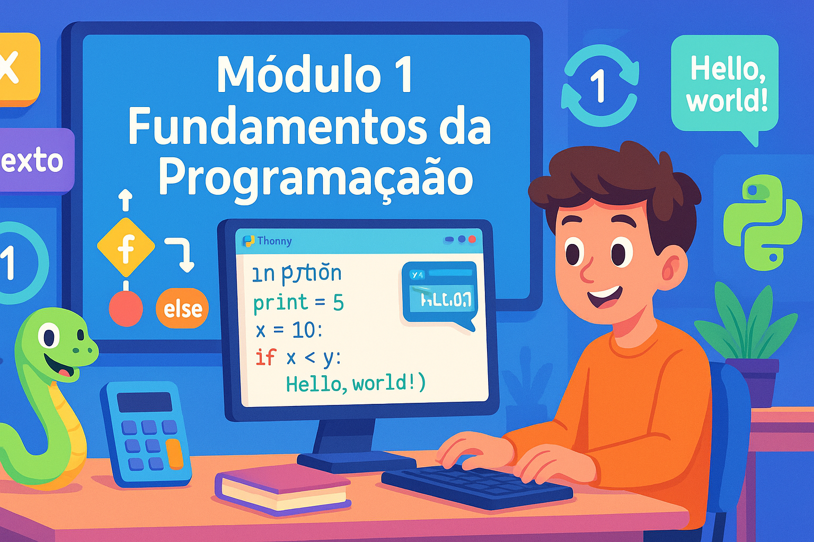

Aprenda os conceitos básicos de programação e dê seus primeiros passos com Python
Neste primeiro módulo, você vai dar os primeiros passos no universo da programação. Vamos começar entendendo como os programas funcionam e, em seguida, mergulhar na sintaxe e nas estruturas fundamentais da linguagem Python.
Programação é a arte de dar instruções para um computador executar tarefas específicas. Imagine que você está ensinando alguém a fazer um bolo: você precisa explicar cada passo de forma clara e na ordem correta. Da mesma forma, quando programamos, escrevemos instruções que o computador entenderá e executará.
Pense em uma receita de culinária. Ela tem:
Variáveis são como caixas onde guardamos informações. Você pode colocar diferentes tipos de coisas nessas caixas: números, textos, listas de itens, etc.
Imagine que você tem uma caixa etiquetada "idade". Dentro dela, você coloca o número 15. Sempre que precisar saber a idade, você olha dentro dessa caixa. Em Python, fazemos assim:
idade = 15
nome = "Maria"
altura = 1.65Em Python, variáveis são referências dinamicamente tipadas que apontam para objetos na memória. O interpretador Python gerencia automaticamente a alocação e liberação de memória (garbage collection). A atribuição usa o operador = e não requer declaração de tipo:
# Python é dinamicamente tipado
x = 10 # int
x = "texto" # agora é str - reatribuição válida
x = [1, 2, 3] # agora é list
# Múltiplas atribuições
a, b, c = 1, 2, 3
x = y = z = 0Python trabalha com vários tipos de dados. Os principais são:
Operadores são símbolos que realizam operações com valores:
Python é uma das linguagens de programação mais populares do mundo. Foi criada por Guido van Rossum em 1991 com o objetivo de ser fácil de ler e escrever. Hoje é usada por empresas como Google, Netflix, Instagram e NASA.
A tradição da programação é começar com um programa "Hello World". Vamos fazer isso em Python:
print("Hello World!")
print("Meu primeiro programa em Python!")A função print() exibe mensagens na tela. Simples assim!
Estruturas de controle permitem que o programa tome decisões. É como quando você decide: "SE está chovendo, ENTÃO levo guarda-chuva, SENÃO não levo".
idade = 16
if idade >= 18:
print("Você é maior de idade")
else:
print("Você é menor de idade")
# Você pode ter múltiplas condições com elif:
nota = 85
if nota >= 90:
print("Conceito A - Excelente!")
elif nota >= 70:
print("Conceito B - Bom!")
elif nota >= 50:
print("Conceito C - Regular")
else:
print("Conceito D - Reprovado")O loop for repete uma ação um número específico de vezes:
# Contando de 1 a 5
for numero in range(1, 6):
print(numero)
# Percorrendo uma lista
frutas = ["maçã", "banana", "laranja"]
for fruta in frutas:
print(f"Eu gosto de {fruta}")O loop while repete ENQUANTO uma condição for verdadeira:
contador = 0
while contador < 5:
print(f"Contador: {contador}")
contador += 1 # contador = contador + 1Se a condição do while nunca se tornar falsa, o loop vai rodar para sempre. Sempre garanta que há uma forma de sair do loop.
Vamos colocar tudo em prática criando uma calculadora básica!
print("=== CALCULADORA SIMPLES ===")
print("Escolha a operação:")
print("1. Soma")
print("2. Subtração")
print("3. Multiplicação")
print("4. Divisão")
opcao = int(input("Digite sua opção (1-4): "))
num1 = float(input("Digite o primeiro número: "))
num2 = float(input("Digite o segundo número: "))
if opcao == 1:
resultado = num1 + num2
print(f"{num1} + {num2} = {resultado}")
elif opcao == 2:
resultado = num1 - num2
print(f"{num1} - {num2} = {resultado}")
elif opcao == 3:
resultado = num1 * num2
print(f"{num1} x {num2} = {resultado}")
elif opcao == 4:
if num2 != 0:
resultado = num1 / num2
print(f"{num1} ÷ {num2} = {resultado}")
else:
print("Erro: Não é possível dividir por zero!")
else:
print("Opção inválida!")def calculadora():
while True:
print("\n=== CALCULADORA AVANÇADA ===")
print("1. Soma")
print("2. Subtração")
print("3. Multiplicação")
print("4. Divisão")
print("5. Potência")
print("0. Sair")
try:
opcao = int(input("\nEscolha uma opção: "))
if opcao == 0:
print("Até logo!")
break
if opcao < 1 or opcao > 5:
print("Opção inválida!")
continue
num1 = float(input("Primeiro número: "))
num2 = float(input("Segundo número: "))
if opcao == 1:
print(f"Resultado: {num1 + num2}")
elif opcao == 2:
print(f"Resultado: {num1 - num2}")
elif opcao == 3:
print(f"Resultado: {num1 * num2}")
elif opcao == 4:
if num2 != 0:
print(f"Resultado: {num1 / num2}")
else:
print("Erro: divisão por zero!")
elif opcao == 5:
print(f"Resultado: {num1 ** num2}")
except ValueError:
print("Erro: Digite apenas números!")
# Executar a calculadora
calculadora()Agora que você completou o Módulo 1, visite o Observatório do Futuro para revisar todos os conceitos através de flash cards interativos!